Digital Control Design
In this example we will attempt to design a digital feedback controller for our basic SISO example. We quickly compute the plant, the templates and the bounds as follows:
% plant
k=qpar('k',2,2,5,8);
a=qpar('a',3,1,3,8);
z=qpar('z',0.6,0.3,0.6,8);
wn=qpar('wn',4,4,8,8);
num = [qrff('hf',a) qrff('gain',k)];
den = qrff('dc',wn,z);
P = qplant(num,den);
% templates
w = [0.2 0.5 1 2 3 5 7 10 20 50];
w_nom = logspace(-2,2.2,300);
P.cnom(w_nom);
P.ctpl('rff',w,'accuracy',[0.25 1])
% specifications
spec1 = qspc('odsrs',w,6);
spec2 = qspc.rsrs([1.2 0.2],10,1.5,[],logspace(-1,2),2.85,3.1);
des = qdesign(P,[spec1 spec2]);
% bounds
des.cbnd('odsrs');
des.cbnd('rsrs');Assume that a digital controller with sampling period 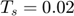 seconds is to be used, i.e. the sampling frequency is 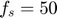 [Hz] or 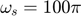 [rad/s] 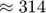 [rad/s]. Therefore an analog anti-aliasing pre-sampling filter, 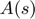, with a bandwidth of 100 [rad/s], is introduced as part of the controller transfer function. We choose
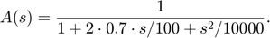
The sampling and hold operation of the digital feedback compensator has the analog transfer function
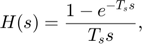
which can be realized in series with the anti-aliasing filter using the Control System Toolbox as follows
Ts = 0.02; s = tf('s'); A = 1/(1+2*0.7/100*s+s^2/100^2); H = (1-exp(-Ts*s))/Ts/s; HA = H*A; bode(HA,logspace(-1,log10(50*pi))); % plot up to Nyquist frequency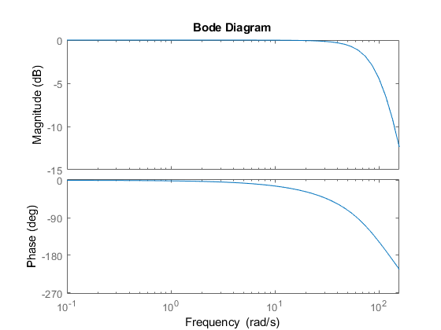
Now comes the stage to design the digital feedback compensator pulse transfer function as a function of 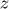. With 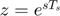 one gets its frequency function. It is of course possible to design directly in the -domain, However we choose the, often more convenient, 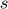-domain design followed by translation to the -domain. We recommend the so called modal or matched pole-zero translation implemented in the Control System Toolbox command c2d with the 'matched'.
Our first design attempt will be a modal translation of the analog compensator
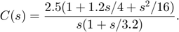
The Nichols nominal open-loop response 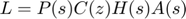 is computed as
Cs = 2.5*(1+1.2*s/4+s^2/16)/s/(1+s/3.2); Cz = c2d(Cs,Ts,'matched'); Cfr = qfr(Cz,w_nom); % get open Qsyn frequency response element CHA = series(Cfr,HA); % add the filter and the sampler h = des.showbnd('odsrs',[],[2 3 5 7 10 20 50]); % show sensitivity bounds des.showbnd('rsrs',h,[0.2 0.5 1]); % show servo bounds des.loopnic(CHA) % plot L on NC ngrid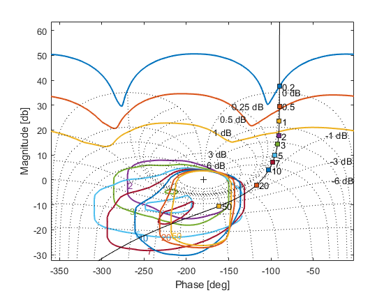
The result is not that impressive: another lag, seems to be necessary, and we try again with
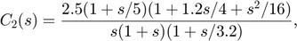
which is realized with aid of the Control System toolbox as
C2s = 2*(1+s/5)*(1+1.2*s/4+s^2/16)/s/(1+s)/(1+s/3.2); C2z = c2d(C2s,Ts,'matched'); C2fr = qfr(C2z,w_nom); % get open Qsyn frequency response element C2HA = series(C2fr,HA); h2 = des.showbnd('odsrs',[],[2 3 5 7 10 20 50]); % show sensitivity bounds des.showbnd('rsrs',h2,[0.2 0.5 1]); % show servo bounds des.loopnic(C2HA) % plot L on NC ngrid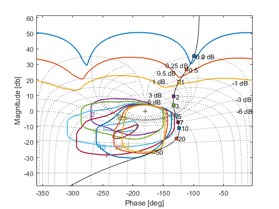
For the digital prefilter design, it is not necessary to include a presamplingfilter, and a sampling and hold device, since the reference signal is generated in the computer, or received as a sampled signal.
spec2.show('freq'); Fs = zpk([],[-0.9*4+4*sqrt(1-0.9^2)*1i -0.9*4-4*sqrt(1-0.9^2)*1i],16); Fz = c2d(Fs,Ts,'matched'); F = qfr(Fz,w_nom); des.clmag(C2HA,F) axis([0.01 100 -50 2])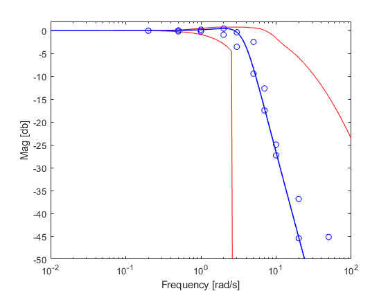
Design validation is performed as in the continuous-time case